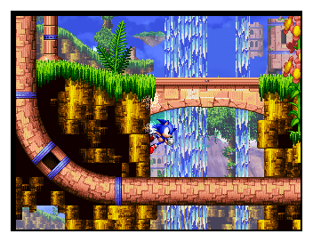
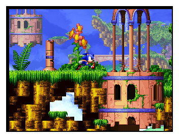
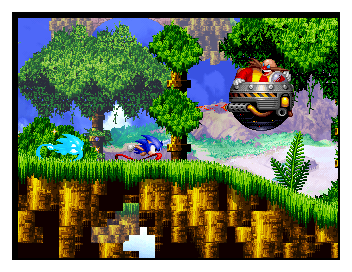

WELCOME TO SONIC XG
 Sonic eXtended Genesis (abbreviated as "Sonic XG") is a Sonic fan project that depicts an alternate take to the Knuckles campaign in Sonic 3 & Knuckles.
Sonic eXtended Genesis (abbreviated as "Sonic XG") is a Sonic fan project that depicts an alternate take to the Knuckles campaign in Sonic 3 & Knuckles.
Starting development in 2001 by Euan Gallacher, the project has gone through many iterations and has had involvement from a number of key figures in the Sonic Scene. As such, the project became a pivotal footnote towards 2017's "Sonic Mania".
This iteration of the project is being developed by Fan Circle "ULTRA RING" with blessings and contributions from Euan Gallacher and Joseph Waters, the project's original developers.
GALLERY:


